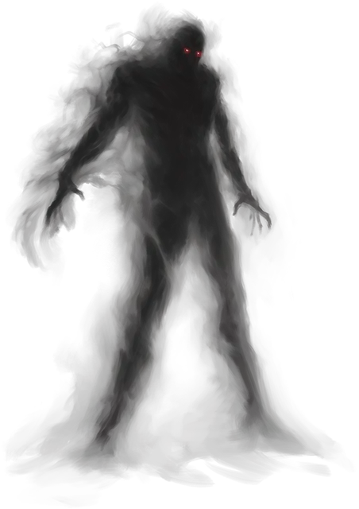

Шемшиме
Shemshime
Средняя Нежить, именной НИП

Класс Доспеха 13
Хиты 31 (7к8)
Скорость 0 футов, летая 40 футов (парит)
| мод | спас | ||
|---|---|---|---|
| СИЛ | 6 | −2 | −2 |
| ЛОВ | 17 | +3 | +3 |
| ТЕЛ | 10 | +0 | +0 |
| мод | спас | ||
|---|---|---|---|
| ИНТ | 17 | +3 | +5 |
| МДР | 14 | +2 | +4 |
| ХАР | 16 | +3 | +3 |
Навыки Восприятие +4, Скрытность +7
Сопротивление урону звук, кислота, огонь, электричество; дробящий, колющий, рубящий
Иммунитет к урону некротическая энергия, холод, яд
Иммунитет к состояниям окаменение, опутанность, отравление, сбивание с ног, захват, паралич, очарование, испуг, истощение
Чувства тёмное зрение 120 футов, пассивное Восприятие 14
Языки Телепатия 60 фт.
Опасность 4 (1100 опыта)
Бонус мастерства +2
Особенности
Сокрушительная смерть. Если в результате нанесенного урона хиты Шемшиме уменьшаются до 0, то вместо этого они опускаются до 1 хита, если только полученный урон не являлся результатом того, что Шемшиме был раздавлен объектом весом не менее 1000 фунтов.
Бестелесное перемещение. Шемшиме может перемещаться сквозь других существ и предметы, как если бы они были труднопроходимой местностью. Он получает урон силовым полем 5 (1к10), если оканчивает ход внутри предмета.
Действия
Прикосновение безумства. Рукопашная атака заклинанием: +5 к попаданию, досягаемость 5 фт., одна цель. Попадание: 17 (4к6 + 3) урона психической энергией.
Шёпот жестокости. Шемшиме выбирает до двух видимых существ, находящихся в пределах 60 футов от него. Каждая цель должна преуспеть в спасброске Мудрости Сл 13, иначе получит 7 (1к8 + 3) урона психической энергией и должна использовать реакцию для совершения рукопашной атаки оружием по одному из существ, находящихся в его досягаемости (по выбору Шемшиме), и видимое Шемшиме.
Завывающий гул (Перезарядка 6). Шемшиме нацеливается на одно видимое существо, находящееся в пределах 30 футов от него. Существо должно совершить спасбросок Мудрости Сл 13, в случае провала получая 21 (4к8 + 3) урона психической энергией и становясь ошеломленной до конца своего следующего хода. В случае успеха цель получает половину этого урона и не ошеломляется.